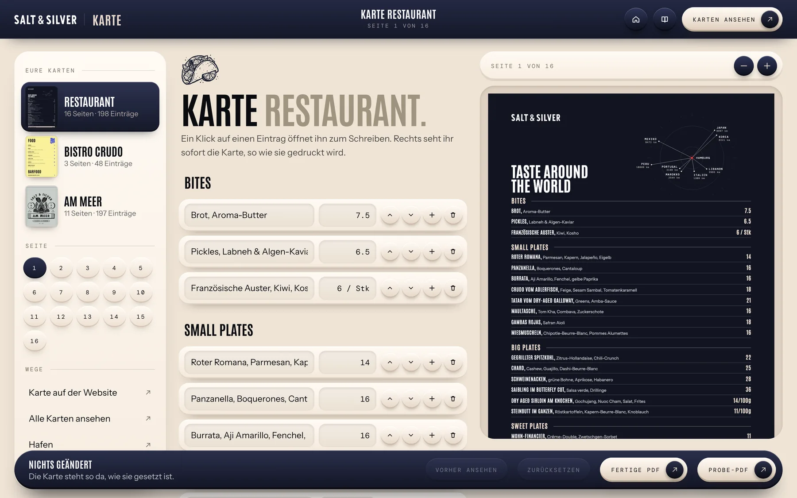
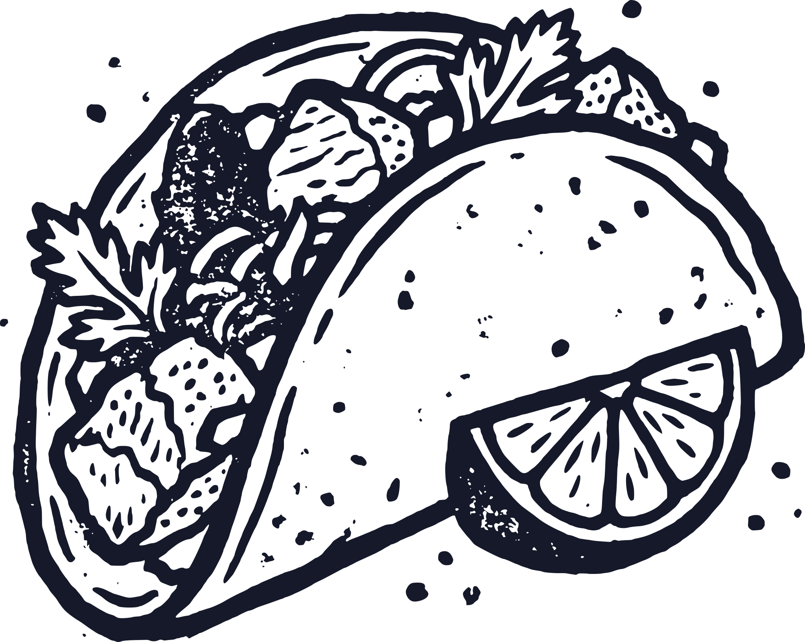
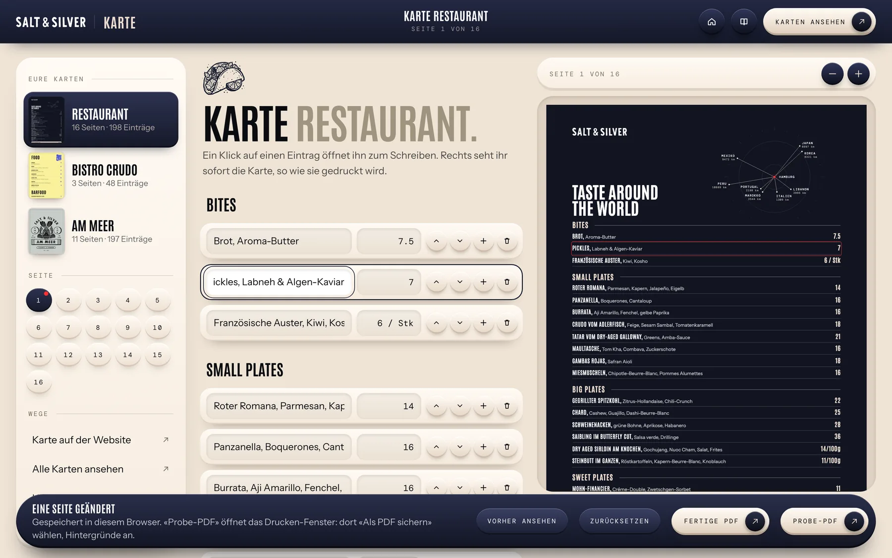
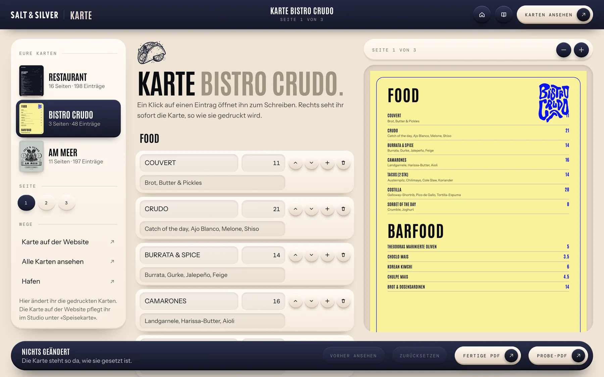

Karte
Die Karte wählen
Links stehen eure drei Karten. Ein Klick öffnet die Karte, darunter wählt ihr die Seite.
In der Mitte seht ihr alle Einträge dieser Seite, rechts die Karte, so wie sie gedruckt wird.

5 Kapitel
Gerichte, Preise und Weine eurer drei gedruckten Karten ändern, in fünf Handgriffen.

Links stehen eure drei Karten. Ein Klick öffnet die Karte, darunter wählt ihr die Seite.
In der Mitte seht ihr alle Einträge dieser Seite, rechts die Karte, so wie sie gedruckt wird.

Klickt in der Mitte in das Feld mit dem Gericht oder dem Preis und schreibt den neuen Text.
Die Karte rechts ändert sich beim Tippen. Ihr könnt auch direkt auf der Karte auf eine Zeile klicken und dort schreiben.
Alles vor dem ersten Komma wird fett gesetzt, so wie auf der ganzen Karte.
Neben jedem Eintrag stehen vier runde Tasten. Das Plus legt darunter einen neuen Eintrag an.
Mit den Pfeilen rückt ein Eintrag eine Zeile nach oben oder unten.
Die Tonne entfernt ihn. Sie fragt einmal nach: erst der zweite Druck löscht.
Passt ein Eintrag nicht mehr auf die Seite, steht über der Liste ein roter Hinweis mit den fehlenden Millimetern.
Dann einen Text kürzen, einen Eintrag entfernen oder ihn auf die nächste Seite setzen.

Unten steht, wie viele Seiten ihr geändert habt. «Vorher ansehen» zeigt die Karte, wie sie war.
«Probe-PDF» öffnet das Drucken-Fenster eures Browsers. Wählt dort «Als PDF sichern» und schaltet die Hintergründe ein.
«Zurücksetzen» stellt die Karte wieder so her, wie sie gesetzt wurde.
Eure Änderungen bleiben im Browser des Rechners, an dem ihr arbeitet. Die Karte auf der Website pflegt ihr im Studio unter «Speisekarte».